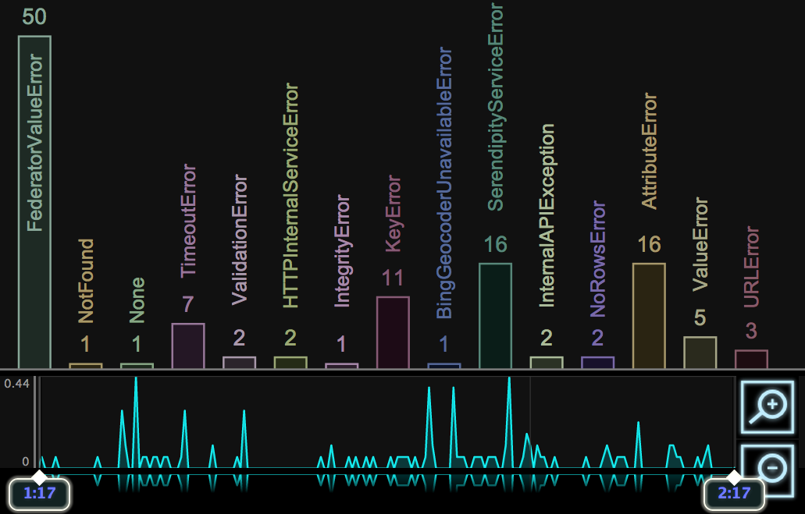
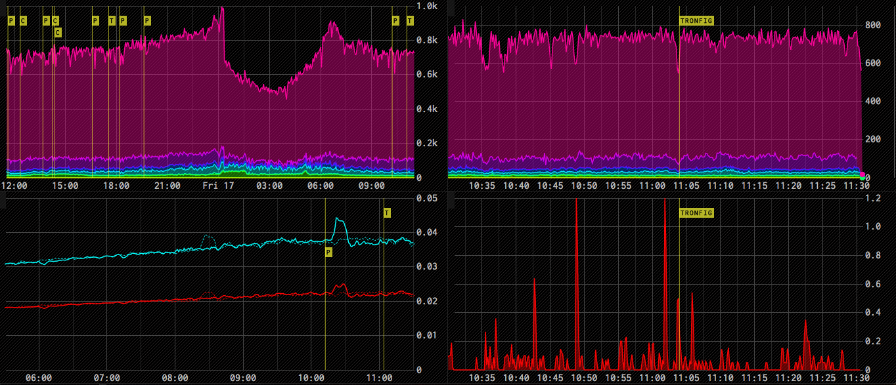
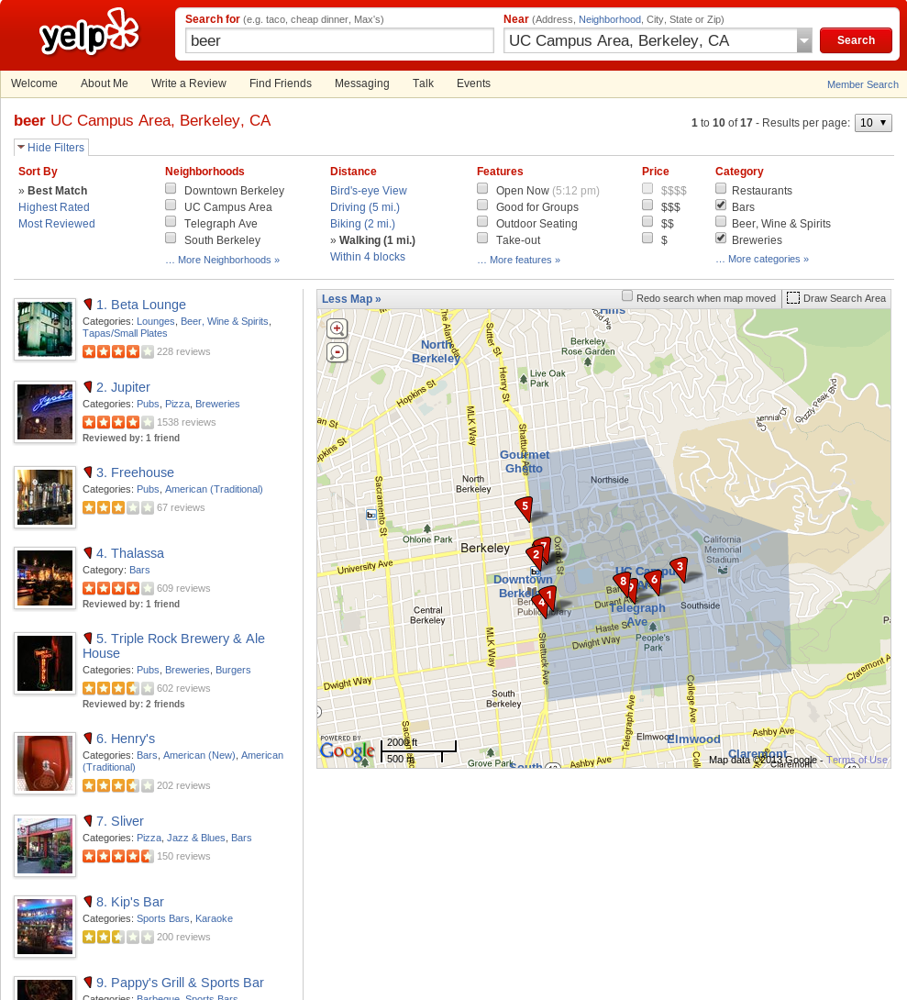
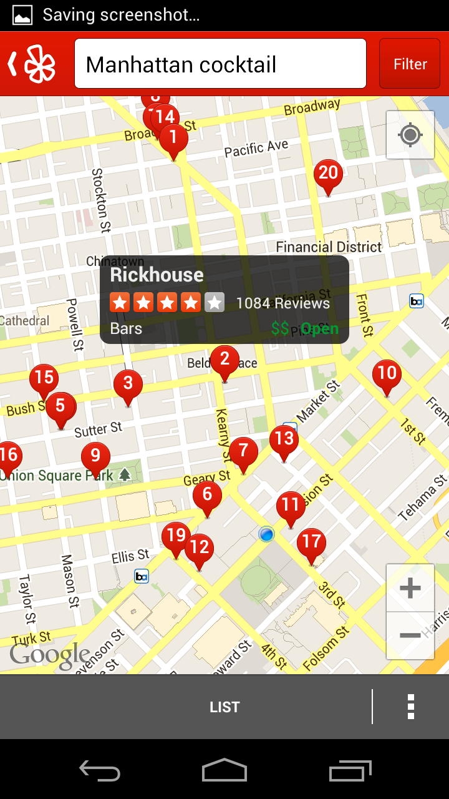
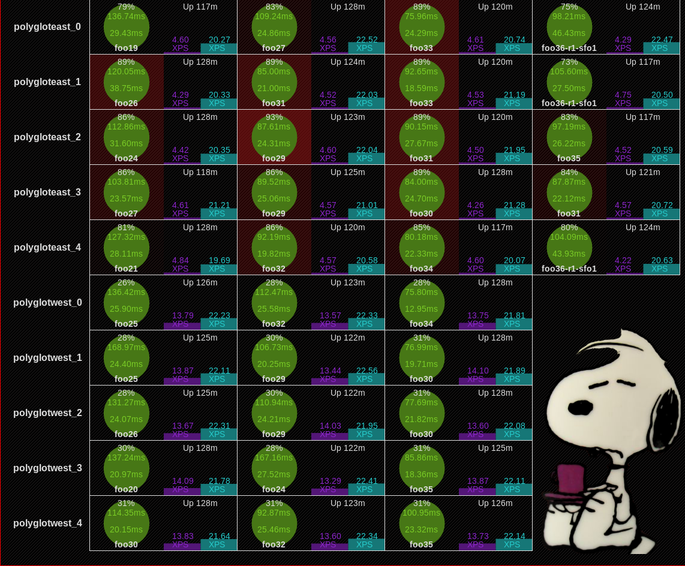
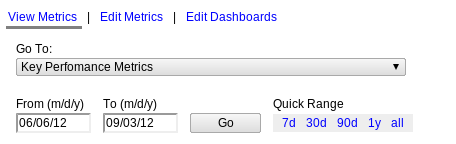
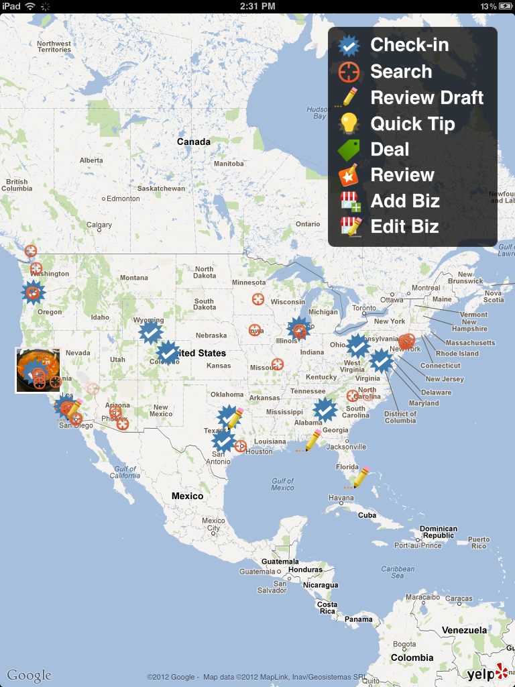
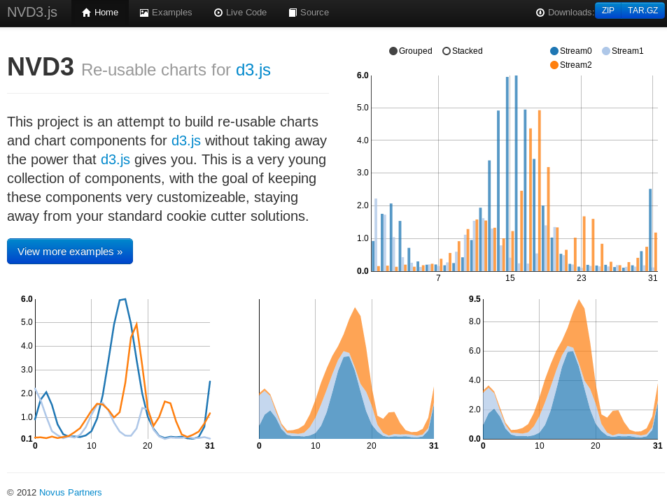
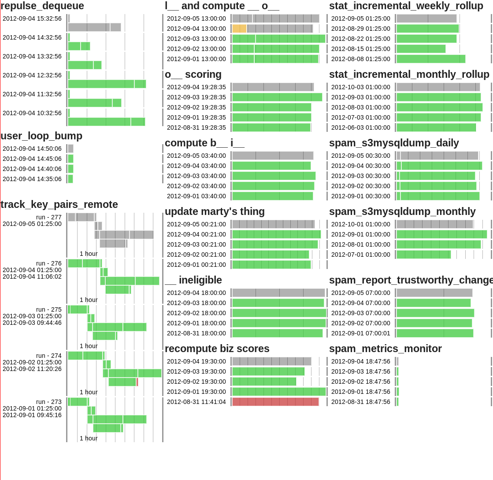

name: inverse layout: true class: left, top, inverse --- # Visualizing Data at *Yelp* --- ## Visualizing Data is Important + Effectively summarizes data + Highlights patterns + Improves recall ??? ## Metrics + Can't improve something until you measure it + True, but have to look at and understand the data! + Often best way to understand data is visually + Having metrics you care about evident will make you focus on improving them + The more sophisticated your visualizations, the more sophisticated your goals --- ## Visualizing Data is Difficult + Requires investment + Dimensions of success + Successful visualizations in Yelp ??? ## Role in Yelp + Often requires specific domain knowledge of both the data and the tools + Ideally have 2 big screens per pod + "That's a lot of TVs!" + Get motivated everyday + Show what you care about + Don't want a sterile office, decorate with the results of your work --- ## Where are the hipsters? http://www.yelp.com/wordmap ??? ## How many reviews include certain words, on a map + Can help you find dim sum outside Chinatown + Helps you understand neighborhoods + But main feature is... Cool --- ## Cool + Good looking is a dimension of any visualization + People keep looking for a "Minority Report UI" ??? ## Cool is OK + Engineers need to come to grips that to be visually compelling, a visualization needs to look nice + Just like the most compelling novels need to be well written + We realize this, we just don't like to admit it --- ## Avoid Chart Junk + Edward Tufte rightfully suspicious of cool + Worry about ```data/ink``` ratio + But remember tradeoffs: memorability, fun <img src="img/usefuljunk-monster.jpg" width=80% /> ??? ## Useful Junk? + Data/ink ratio describes the amount of information displayed per ink/pixel + If you remove a pixel, will you remove information? + Best Paper by Scott Bateman HCI: some useful Junk + Noted the context of the chart + Bad ratio limits richness, especially important on mobile --- ## Graperr  ??? ## Shows errors live from log + Error activity + Highlight error type UnicodeDecodeError + Text details available + Still Cool! + Colors slick, modern + But used for differentiation (data) --- ## Actionable .left-column[ + Realtime* + Context + Connections ] .right-column[ ] ??? ## Definitions + As realtime as problem domain requires + Seconds matter when fixing site problems, so should be up to the second + Days or weeks might matter when deciding budget issues + Context: Is this a normal amount of errors? + Connections: Ability to drill down to specific instance --- ## Dimensions + Fun + cool, pretty, engaging + Actionable + realtime, contextual, connecting ??? ## Agenda + Dimensions important to visualizations + Axis on which you can evaluate them + Tradeoffs in developing them --- ## Mario .center[ ] ??? ## Ads Visualizations + Realtime tracking + Clicks --- ## A Tale of Two Datacenters + Testing datacenter failover + Tracking metrics in a new way + Did we spend a week preparing a dashboard? ??? ## How? + Yelp used to be in only one datacenter + Moving to two datacenters is a huge undertaking, but worth it for reliability reasons + Don't want to bring down a worldwide site when freak electrical storms hit your datacenter + After months of work, how did watch over our site when we finally flipped the switch? + This was the first time Yelp had done this: we didn't have a premade dashboard so everyone could track the important metrics --- ## Firefly  ??? ## Demo + One of our many open source projects + Hosted on Github + Existing extension to Ganglia --- ## Easy + Make repeated operations fast and within reach + Must understand problem domain + Accessible ??? ## Definitions + Sophisticated Tool: Data discovery, stacking options, coloring, layout + But all of the steps are repeated, formulaic: we're making similar things over and over + So make it easy! + Not much more accessible than Web: share links, etc. --- ## Easy from Simple + Avoid temptation to make visualizations easy from the start + Easy systems are designed for non-experts + Long term investment in the system to manage complexity ??? ## Non-experts + Simple Made Easy, Rich Hickey + Still potentially technical users + Just don't know the details of how metrics are collected, or how to display across browsers + Always will require experts to make changes + Always are going to want new features + Make sure you have the ability to add them + Not extensible --- ## Search Maps  ??? ## Times Change + 2005, 9 years ago + May not seem like important visualization, but times have changed + Full page refresh for each map square + Now we take zoom in, panning for granted + Sign of a great visualization: don't think about it: it's a tool + What else are we not plotting on maps that we should be? --- ## Interactive .left-column[ + Fast + Explorable + Feedback ] .right-column[  ] ??? ## Definitions + Fast + One of the reasons its a fairly recent technology, hard to get fast + Speed gives the UI illusion that you are interacting with a physical thing, something we're much more comfortable with + Explorable + Multiple levels of detail that can be discovered by user + Feedback + Update all other dependent displays (search results) --- ## Where did D3 come from? + Michael Bostock had a problem + Protovis useful, but not flexible + How to provide coherent description for visualizing data? ??? ## D3 Intro + Mike Bostock professor at Stanford + Protivis was a declarative Javascript charting library + But hard to keep up with changes in technology + Wasn't quite flexible enough for new visualizations --- ## D3: Data-Driven Documents http://bl.ocks.org/mbostock/raw/1256572/ --- ## Flexible + Language level + Access to medium + Access to data ```javascript d3.selectAll("p") .data([4, 8, 15, 16, 23, 42]) .style("font-size", function(d) { return d + "px"; }); ``` ??? ## Why? + Metaphor natural language + General language most flexible tool humans have to describe new things + Full access to medium to be able to create take advantage of all possibilities + and new tech + Not D3 specific, but need full data to find new ways to summarize, explore, drill + Need to understand where data came from to clean, normalize --- ## Dimensions + Fun + cool, pretty, engaging + Actionable + realtime, contextual, connecting + Easy + available for non-experts, remove repetition + Interactive + fast, explorable + Flexible + expressive, full access to lowest level ??? ## Tension + Obvious: Flexible vs Easy. Too many options is confusing. + Less obvious: Interactive vs Actionable. Spend too long playing, not enough fixing + In fact: All in contention for your time --- ## Understand Usage Context --- ## Press: Fun .center[ <img src="img/yelp20m.jpg" width=60% /> ] --- ## Alerting: Actionable  ??? ## Search Metrics + This is a visualization of the status of our search cluster --- ## Product Managers: Easy  --- ## Investigation: Interactive .white-background[ <img src="img/ipy_0.13.png" width=100% /> <img src="img/IPy_header.png" width=100% /> ] --- ## Explorable: Interactive .center[  ] ??? ## Another Case + Another case for Interactivity is geographical data --- ## New tools: Simple  --- ## New tools: Flexible .center[  ] ??? ## Unique + You can see this is not a standard visualization + It is one that is customized to its purpose + Made possible by flexible tools --- ## Dimensions + Fun + cool, pretty, engaging + Actionable + realtime, contextual, connecting + Easy + available for non-experts, remove repetition + Interactive + fast, explorable + Flexible + expressive, full access to lowest level ??? ## Consider Tradeoffs + Visualization is just part of making an effective biz, team + Interested in working at Yelp?